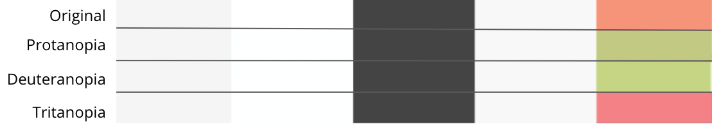

Accessibility Features
For those with differing visual abilities:
Visual Aid Information:
Daltonization:
Daltonization is the image correcter that has allowed for the photographs on this website to be altered for a version that aids protanopia. Stanford researchers created a daltonizing algorthim and published it to the open public. The images that are inputed into the algorithm will be corrected by changing the rgb profile. These new colors will create a easier distinction between red and green. All images are corrected this way when the feature is applied.
Color Palette:
 The color palette incorporated on this website has been carefully considered to allow those with protanopia, deuteranopia, and tritanopia to easily view the website. These forms of color blindness cannot be completley fixed however, the website's palette only has one true color. In other words, only one color in the palette will alter, keeping the same atmosphere of the website.
Dyslexia Help:
The website is able to help those with dyslexia. Dyslexia causes the user to have difficulty in understanding the text. To combat these problems, there is an option that changes the font to one that is easier to comprehend. This font makes certain areas, like the curves and edges of the letters, thicker. It also changes the sizes of similar looking letters such as b, p, and q creating a better grasp of the content.

Dyslexic Font
We understand some people may have a harder time reading than others, specifically those with dyslexia. Jerry Smith would like to make the website as accessible as possible. That is why there is an option for you to change the font of the entire website to one that makes it easier to read. This improves the experience for those with dyslexia. Click the learn more button to understand dyslexia better.
Protanopia
Protanopia is the most common type of color blindness that causes a person to completly not see the difference between red and green. We want to make sure that viewers, even those with differing abilities, get the best experience on this website. If you press apply all the pictures will convert into a form that will aid those with protanopia. To get an in-depth understanding of this form of color blindness click the learn more button.
Tritanopia
Tritanopia is a form of complete blue-yellow color blindness. As they are unable to view these two different colors the corrections of the image will allow a level of differentiation. Although this is rare compared to other forms of color blindness, we still would still like to create an inclusive environment. One where these individuals can easily participate in viewing the photography.
Deuteranopia
Deuteranopia is another form of red-green color blindness. While it is very similar to protanopia, protanopia affects the red-cone pigments in the retina. While deuteranopia affects the green-cone pigments in the retina. At the moment, there is no cure for deuteranopia. We would like to be able to let any user with this type of color blindess see Smith's photography as he meant it to be seen.